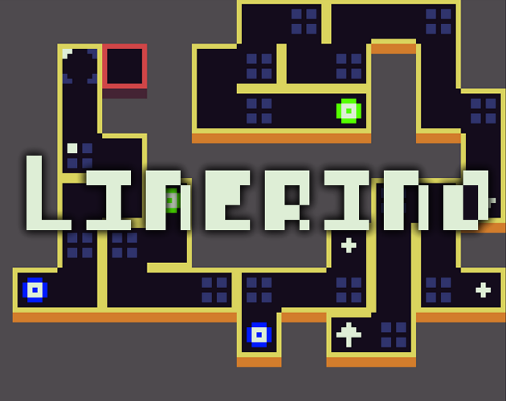
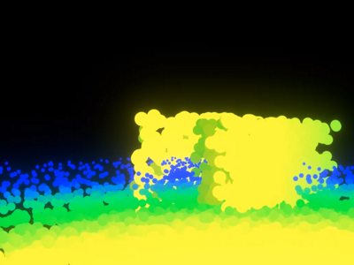
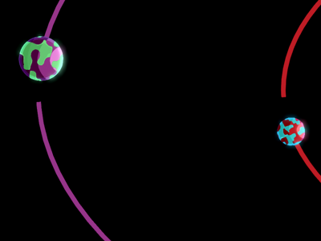

Projects
-

Linerino
A fun simple yet challenging puzzle game made in Nim utilizing the Nico framework. Play handcrafted levels, or procedural generated endless levels.
-

Hells Divide
Second place game jam game. Unique roguelike first person slasher, that has players explore a dungeon, getting upgrades on level progression that change drastically.
-

Point Renderer
A simple rendering method that raycasts from the camera, and then renders quads that face the camera. Quads then can have a custom texture applied to create interesting effects.
-

Cords
A 2 week long game jam game, with skill and puzzle solving. Level editor and silly puzzles.
-

Pi Ui
PiUI is a radial menu creation tool for the Unity Engine. It enables easy creation of screenspace radial menus. Users can choose to make menus either dynamically, or manually in editor.
-

Planetary Postage
A 2D physics sandbox. Launch projectiles from a Planet and watch its trajectory. All planets are procedurally textured in shader.